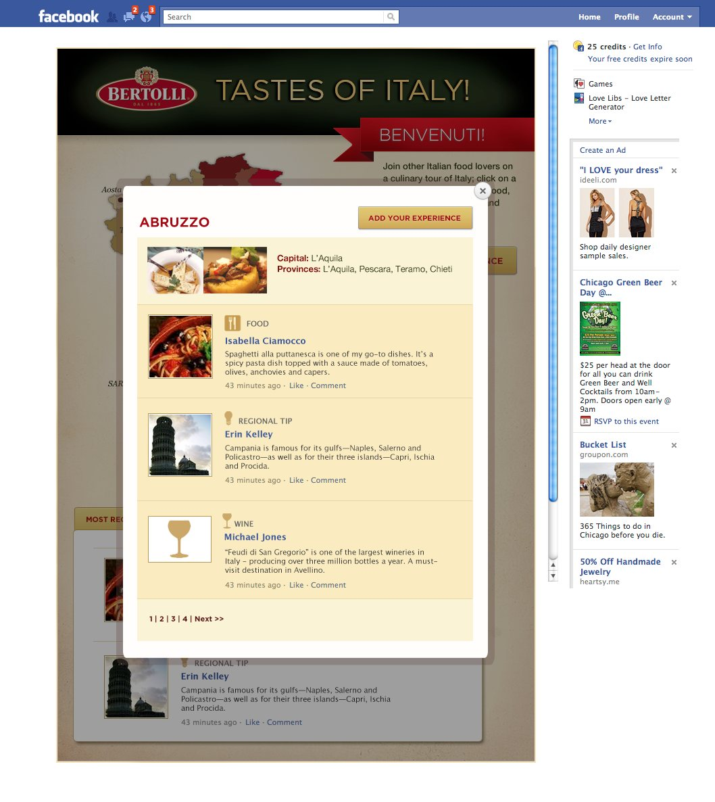
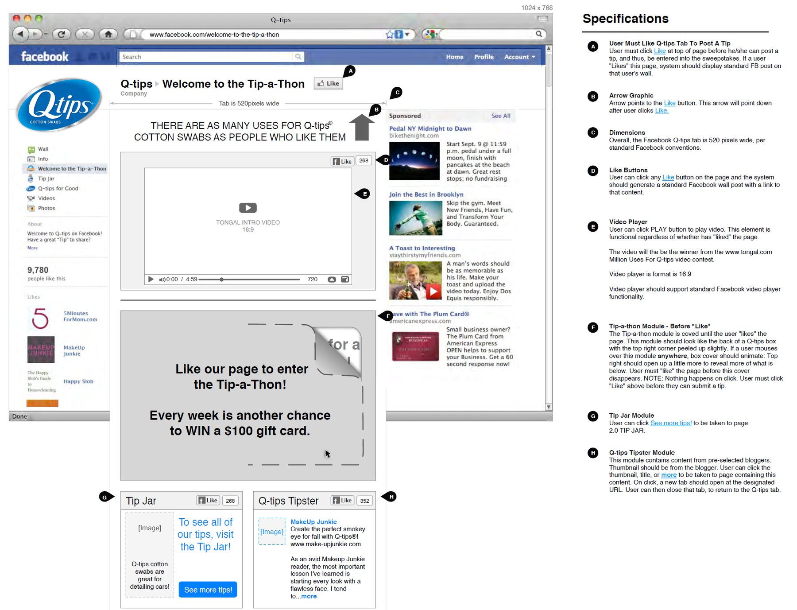

Unilever: Bertolli and Q-tips
Digital work across Unilever brands: a Facebook map app for Bertolli, a Q-tips contest app, the Suave.com migration and Hellmann's grant program in Canada.
Creative productionProgram delivery
4brands: Bertolli, Q-tips, Suave, Hellmann's
1platform rolled out across Unilever sites
2Facebook apps
OffshoreQA and deployment teams
The problem
- Unilever was moving its brand sites onto one platform, Project Avinash.
- Each brand also wanted social apps, built to designs from its creative agencies.
What I did
- Worked with Sapient architects to roll the Avinash platform out across Unilever properties.
- Produced the Bertolli Tastes of Italy map app on Facebook, and the Bertolli Primi registration platform.
- Guided the Q-tips Tip-a-Thon wireframes: strategy, annotations and specifications.
- Ran estimates, SOWs, staffing plans and change orders.
- Managed offshore QA and deployment, and checked agency deadlines for risk.
What changed
- Brand apps launched to agency designs.
- Lessons from each project fed the next one.

